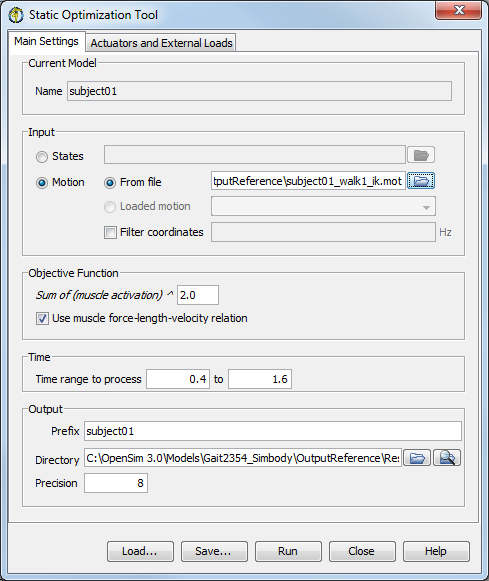

The topics covered in this section include:
To launch the Static Optimization Tool, select Static Optimization… from the Tools menu. The Static Optimization Tool dialog window (figure below), like all other OpenSim tools, operates on the current model open and selected in OpenSim (e.g., subject01). The Static Optimization Tool is controlled by a dialog box with two tabbed panes. The Main Settings pane specifies parameters related to the input kinematics of the current model, the time range for the analysis, and the output of the results. The External Loads pane specifies parameters related to the external loads applied to the model during the analysis.
See How to Use the Inverse Dynamics Tool for additional details about the External Loads pane. The Main Settings pane is organized into five main sections:
Dialog Box for the Static Optimization Tool. The Main Settings pane.
|  | Current Model: Displays an uneditable name for the current model being used for the static optimization analysis. Input: Displays editable information specifying the kinematics (e.g., states or motion) describing the movement of a model. Objective Function: Displays editable information specifying the power to which the muscle activations should be raised and whether or not to use the muscle force-length-velocity properties. Time: Displays editable information specifying the start and end time for the Static Optimization analysis. Output: Displays editable information specifying the prefix appended to the resulting output file, the directory to which the file is saved, and the precision (number of decimal places) used when writing results. You may use the button to browse for a directory to save the output files, and the button to open an Explorer window for the specified directory.
|
|---|
At the bottom of all the Tool dialog windows are four buttons, located in what we call the Control Panel.
 | - The Load and Save buttons are used to load or save settings for the tool.
- The Run button starts execution.
- The Close button closes the window.
- The Help button takes you to the relevant section of the User Guide.
 | Note that the Close button can be clicked immediately after execution has begun; the execution will complete even though the window has been closed. |
- If you click Load…, you will be presented with a file browser that displays all files ending with the .xml suffix. You may browse for an appropriate settings file (e.g., subject01_Forward_Setup.xml or subject01_Scale_Setup.xml)) and click Open. The tool will then be populated with the settings in that setup file.
- If you have manually entered or modified settings, you may save those settings to a file for future use. If you click Save…, a Save dialog box will come up in which you can specify the name of the settings file. The name you specify for the file should have a suffix of .xml. Click Save to save the settings to file.
After you click Save, you may be presented with another dialog box that asks you whether or not you would like to save some of the settings to separate external files. This can be useful if you would like to reuse those settings for other trials or subjects. Check the boxes of the settings that you'd like to save to external files and specify the names of these files. All of these files should have a suffix of .xml.
|
|---|
The Static Optimization Tool can also be run using the command analyze -S <setup file name>, for example,
analyze -S subject01_Setup_StaticOptimization.xml
{kind=link}
{kind=link}
{kind=link}